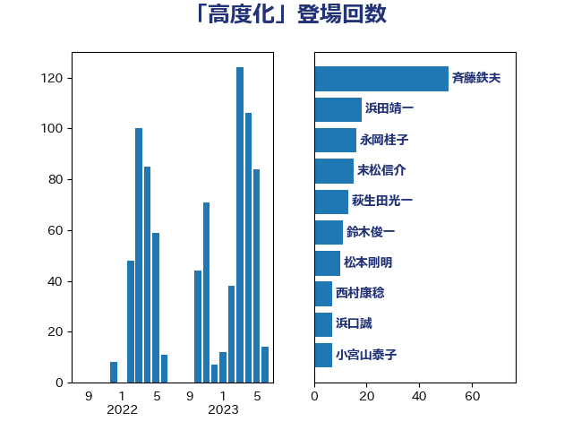

単語「高度化」

| 斉藤鉄夫 | 公明党 | 51 回 |
| 浜田靖一 | 自由民主党 | 18 回 |
| 永岡桂子 | 自由民主党 | 16 回 |
| 末松信介 | 自由民主党 | 15 回 |
| 萩生田光一 | 自由民主党 | 13 回 |
| 鈴木俊一 | 自由民主党 | 11 回 |
| 松本剛明 | 自由民主党 | 10 回 |
| 西村康稔 | 自由民主党 | 7 回 |
| 浜口誠 | 国民民主党 | 7 回 |
| 小宮山泰子 | 立憲民主党 | 7 回 |
| 野村哲郎 | 自由民主党 | 6 回 |
| 梶原大介 | 自由民主党 | 6 回 |
| 岸田文雄 | 自由民主党 | 6 回 |
| 鈴木義弘 | 国民民主党 | 5 回 |
| 豊田俊郎 | 自由民主党 | 5 回 |
| 西銘恒三郎 | 自由民主党 | 5 回 |
| 葉梨康弘 | 自由民主党 | 5 回 |
| 武部新 | 自由民主党 | 5 回 |
| 岡田直樹 | 自由民主党 | 5 回 |
| 古賀之士 | 立憲民主党 | 5 回 |
| 齋藤健 | 自由民主党 | 4 回 |
| 金子恭之 | 自由民主党 | 4 回 |
| 簗和生 | 自由民主党 | 4 回 |
| 福島伸享 | 無所属 | 4 回 |
| 神津たけし | 立憲民主党 | 4 回 |
| 石井苗子 | 日本維新の会 | 4 回 |
| 玉木雄一郎 | 国民民主党 | 4 回 |
| 浅野哲 | 国民民主党 | 4 回 |
| 斎藤アレックス | 国民民主党 | 4 回 |
| 山口那津男 | 公明党 | 4 回 |
| 小林鷹之 | 自由民主党 | 4 回 |
| 塩田博昭 | 公明党 | 4 回 |
| 國重徹 | 公明党 | 4 回 |
| 務台俊介 | 自由民主党 | 4 回 |
| 加藤勝信 | 自由民主党 | 4 回 |
| 中川康洋 | 公明党 | 4 回 |
| 高橋千鶴子 | 日本共産党 | 3 回 |
| 竹内真二 | 公明党 | 3 回 |
| 矢倉克夫 | 公明党 | 3 回 |
| 池田佳隆 | 自由民主党 | 3 回 |
| 森屋隆 | 立憲民主党 | 3 回 |
| 朝日健太郎 | 自由民主党 | 3 回 |
| 岬麻紀 | 日本維新の会 | 3 回 |
| 山崎正恭 | 公明党 | 3 回 |
| 山岡達丸 | 立憲民主党 | 3 回 |
| 古川禎久 | 自由民主党 | 3 回 |
| 勝俣孝明 | 自由民主党 | 3 回 |
| 伊藤俊輔 | 立憲民主党 | 3 回 |
| 中村裕之 | 自由民主党 | 3 回 |
| 高橋光男 | 公明党 | 2 回 |
| 高木真理 | 立憲民主党 | 2 回 |
| 門山宏哲 | 自由民主党 | 2 回 |
| 長友慎治 | 国民民主党 | 2 回 |
| 鈴木英敬 | 自由民主党 | 2 回 |
| 野中厚 | 自由民主党 | 2 回 |
| 谷公一 | 自由民主党 | 2 回 |
| 西岡秀子 | 国民民主党 | 2 回 |
| 菊田真紀子 | 立憲民主党 | 2 回 |
| 荒井優 | 立憲民主党 | 2 回 |
| 紙智子 | 日本共産党 | 2 回 |
| 福山哲郎 | 立憲民主党 | 2 回 |
| 石原宏高 | 自由民主党 | 2 回 |
| 石井拓 | 自由民主党 | 2 回 |
| 田村智子 | 日本共産党 | 2 回 |
| 渡辺猛之 | 自由民主党 | 2 回 |
| 泉田裕彦 | 自由民主党 | 2 回 |
| 松沢成文 | 日本維新の会 | 2 回 |
| 新妻秀規 | 公明党 | 2 回 |
| 山田美樹 | 自由民主党 | 2 回 |
| 山本剛正 | 日本維新の会 | 2 回 |
| 尾身朝子 | 自由民主党 | 2 回 |
| 小野泰輔 | 日本維新の会 | 2 回 |
| 小林史明 | 自由民主党 | 2 回 |
| 宮本徹 | 日本共産党 | 2 回 |
| 宮崎雅夫 | 自由民主党 | 2 回 |
| 宮口治子 | 立憲民主党 | 2 回 |
| 守島正 | 日本維新の会 | 2 回 |
| 塩崎彰久 | 自由民主党 | 2 回 |
| 坂本哲志 | 自由民主党 | 2 回 |
| 嘉田由紀子 | 無所属 | 2 回 |
| 吉田統彦 | 立憲民主党 | 2 回 |
| 加藤鮎子 | 自由民主党 | 2 回 |
| 加藤竜祥 | 自由民主党 | 2 回 |
| 伊藤渉 | 公明党 | 2 回 |
| 伊藤孝恵 | 国民民主党 | 2 回 |
| 井野俊郎 | 自由民主党 | 2 回 |
| 井上貴博 | 自由民主党 | 2 回 |
| 中川宏昌 | 公明党 | 2 回 |
| ながえ孝子 | 無所属 | 2 回 |
| 黄川田仁志 | 自由民主党 | 1 回 |
| 鰐淵洋子 | 公明党 | 1 回 |
| 鬼木誠 | 立憲民主党 | 1 回 |
| 高市早苗 | 自由民主党 | 1 回 |
| 須藤元気 | 無所属 | 1 回 |
| 音喜多駿 | 日本維新の会 | 1 回 |
| 青島健太 | 日本維新の会 | 1 回 |
| 階猛 | 立憲民主党 | 1 回 |
| 阿部司 | 日本維新の会 | 1 回 |
| 阿達雅志 | 自由民主党 | 1 回 |
| 長峯誠 | 自由民主党 | 1 回 |
| 鎌田さゆり | 立憲民主党 | 1 回 |
| 鈴木庸介 | 立憲民主党 | 1 回 |
| 金子恵美 | 立憲民主党 | 1 回 |
| 金城泰邦 | 公明党 | 1 回 |
| 野田聖子 | 自由民主党 | 1 回 |
| 輿水恵一 | 公明党 | 1 回 |
| 足立敏之 | 自由民主党 | 1 回 |
| 藤木眞也 | 自由民主党 | 1 回 |
| 藤巻健太 | 日本維新の会 | 1 回 |
| 蓮舫 | 立憲民主党 | 1 回 |
| 落合貴之 | 立憲民主党 | 1 回 |
| 菅家一郎 | 自由民主党 | 1 回 |
| 若宮健嗣 | 自由民主党 | 1 回 |
| 細田健一 | 自由民主党 | 1 回 |
| 笠浩史 | 無所属 | 1 回 |
| 笠井亮 | 日本共産党 | 1 回 |
| 窪田哲也 | 公明党 | 1 回 |
| 空本誠喜 | 日本維新の会 | 1 回 |
| 秋野公造 | 公明党 | 1 回 |
| 福重隆浩 | 公明党 | 1 回 |
| 礒崎哲史 | 国民民主党 | 1 回 |
| 石川博崇 | 公明党 | 1 回 |
| 石井章 | 日本維新の会 | 1 回 |
| 石井正弘 | 自由民主党 | 1 回 |
| 田畑裕明 | 自由民主党 | 1 回 |
| 田村貴昭 | 日本共産党 | 1 回 |
| 田嶋要 | 立憲民主党 | 1 回 |
| 田島麻衣子 | 立憲民主党 | 1 回 |
| 牧山ひろえ | 立憲民主党 | 1 回 |
| 熊谷裕人 | 立憲民主党 | 1 回 |
| 渡辺創 | 立憲民主党 | 1 回 |
| 浜地雅一 | 公明党 | 1 回 |
| 河西宏一 | 公明党 | 1 回 |
| 沢田良 | 日本維新の会 | 1 回 |
| 櫻井周 | 立憲民主党 | 1 回 |
| 横山信一 | 公明党 | 1 回 |
| 森山浩行 | 立憲民主党 | 1 回 |
| 梅谷守 | 立憲民主党 | 1 回 |
| 柴田巧 | 日本維新の会 | 1 回 |
| 松野博一 | 自由民主党 | 1 回 |
| 末松義規 | 立憲民主党 | 1 回 |
| 木村英子 | れいわ新選組 | 1 回 |
| 木原誠二 | 自由民主党 | 1 回 |
| 木原稔 | 自由民主党 | 1 回 |
| 日下正喜 | 公明党 | 1 回 |
| 新垣邦男 | 立憲民主党 | 1 回 |
| 斎藤洋明 | 自由民主党 | 1 回 |
| 掘井健智 | 日本維新の会 | 1 回 |
| 後藤茂之 | 自由民主党 | 1 回 |
| 平木大作 | 公明党 | 1 回 |
| 川合孝典 | 国民民主党 | 1 回 |
| 岸真紀子 | 立憲民主党 | 1 回 |
| 岩本剛人 | 自由民主党 | 1 回 |
| 山崎誠 | 立憲民主党 | 1 回 |
| 山口壯 | 自由民主党 | 1 回 |
| 山下芳生 | 日本共産党 | 1 回 |
| 小林茂樹 | 自由民主党 | 1 回 |
| 小寺裕雄 | 自由民主党 | 1 回 |
| 宮崎勝 | 公明党 | 1 回 |
| 宮下一郎 | 自由民主党 | 1 回 |
| 大串正樹 | 自由民主党 | 1 回 |
| 城井崇 | 立憲民主党 | 1 回 |
| 土田慎 | 自由民主党 | 1 回 |
| 國場幸之助 | 自由民主党 | 1 回 |
| 和田義明 | 自由民主党 | 1 回 |
| 古賀千景 | 立憲民主党 | 1 回 |
| 友納理緒 | 自由民主党 | 1 回 |
| 北神圭朗 | 無所属 | 1 回 |
| 北側一雄 | 公明党 | 1 回 |
| 勝目康 | 自由民主党 | 1 回 |
| 前原誠司 | 国民民主党 | 1 回 |
| 伊東信久 | 日本維新の会 | 1 回 |
| 伊佐進一 | 公明党 | 1 回 |
| 井原巧 | 自由民主党 | 1 回 |
| 中野洋昌 | 公明党 | 1 回 |
| 中西祐介 | 自由民主党 | 1 回 |
| 中山展宏 | 自由民主党 | 1 回 |
| 上田勇 | 公明党 | 1 回 |
| 三浦靖 | 自由民主党 | 1 回 |
| 三浦信祐 | 公明党 | 1 回 |
| 三宅伸吾 | 自由民主党 | 1 回 |
| 一谷勇一郎 | 日本維新の会 | 1 回 |